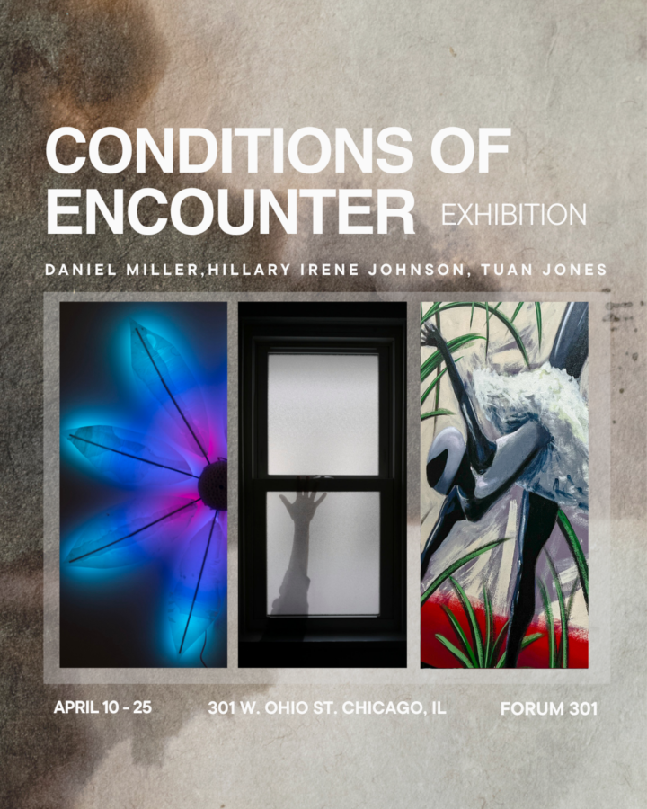

Conditions of Encounter
Exhibition: Conditions of Encounter
Artists: Daniel Miller, Hillary Irene Johnson, Tuan Jones
Opening Reception: April 10, 5pm – 9pm
April 10- April 25
Conditions of Encounter includes three artists exploring the notions of environment and atmosphere. Hillary Irene Johnson, Daniel Miller, and Tuan Jones question how we affect, document, and inhabit spaces. Bringing together interdisciplinary practices, the exhibition reveals what typically goes unseen, inviting an awareness of presence within the space. Through camera-less photography, interactive sculptures, and paintings, the works explore perception and its relation to the subtle exchanges of encounter.
Hillary Irene Johnson presents two interconnected bodies of work: camera-less salt prints from her ongoing 108 Days: Attentive Field and photographic works on silk from A Year in Light. Johnson’s practice uses natural light, duration, and handmade materials to create images that emerge slowly through repeated exposure and careful attention. Her work invites viewers into a quieter mode of perception, where light is experienced not as instant spectacle but as atmosphere, memory, and accumulation.
Daniel Miller presents Mutual Light, a series of interactive sculptural flowers that react to visitors through infrared temperature sensing, distance detection, and air-quality monitoring. As viewers move closer, breathe, and emit heat, the flowers shift in color and luminosity, making visible the often-invisible energies exchanged between body and environment. Constructed from repurposed plastic milk jugs and custom electronic systems, the works combine ecological reuse with poetic technological responsiveness.
Tuan Jones presents When Shadows Plié: The Choreography in Stillness, a series of paintings depicting humanoid figures performing ballet in Formula 1 helmets. The helmets allow the dancers to conceal themselves but also amplify their presence to better navigate the world of ballet, an institution that has historically excluded black and brown bodies. While Racecar driving and Ballet seemingly juxtapose– recklessness vs. grace, they relate in their culture of rigorous expectations of work and their precise and calculated movements. Dancers prance through a forest floor, bestrewn in contradiction, Jones creates a contemplative world where the viewer questions how they occupy and are perceived in space.